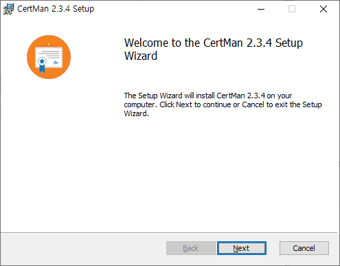
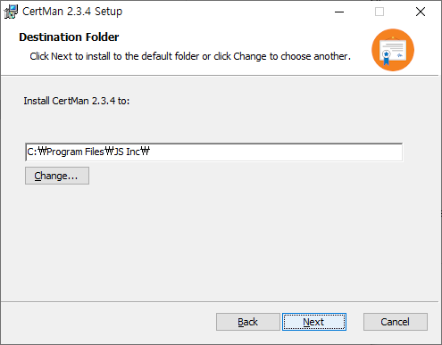
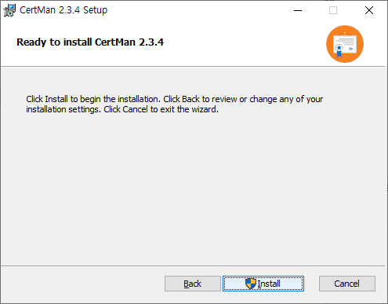
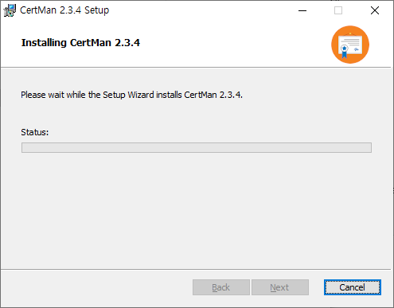
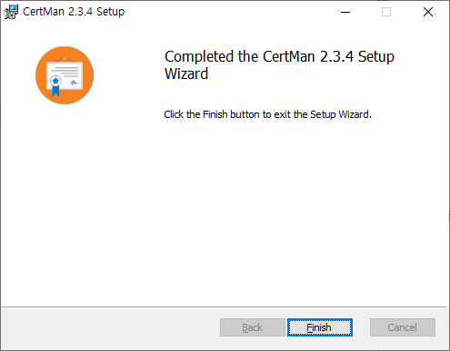

CertMan Windows Installation Guide
This guide explains how to install CertMan using the Windows 64-bit installer. The screenshots below show the CertMan 2.3.4 Setup Wizard.
Version note: The version and filename shown here are examples. Installer filenames, screens, installation paths, and options may change between releases. Check the download and update history for the version you are installing.
1. Download and start the installer
Download the CertMan Windows 64-bit installer
Double-click the downloaded MSI file to start the Setup Wizard. Confirm the product name and version on the welcome screen, then click Next.

2. Choose the installation folder
Review the destination folder. Click Next to use the default location. To install to a different location, click Change..., choose a folder, and then click Next.

3. Start installation
Review the installation settings and click Install to begin. Click Back if you need to change an earlier setting.

If Windows User Account Control (UAC) appears, review the installer prompt and approve it to continue. Administrator approval may be required.
4. Wait for installation to finish
Wait while the Setup Wizard installs CertMan. Do not close the wizard during installation.

5. Finish and launch CertMan
When the completion screen appears, click Finish to close the Setup Wizard.

Find CertMan in the Start menu and launch it. On first launch, select File > New to create a database or File > Open to open an existing one. See the CertMan Basic Usage Guide for common workflows.
Troubleshooting
- If the Setup Wizard does not start, confirm that the MSI download is complete and try again.
- If you see an installation permission error, check whether your Windows account has permission to install applications. Managed computers may require administrator approval.
- If CertMan does not start after installation, note the error message, Windows version, and installer version.
- To uninstall CertMan, open Windows Settings > Apps > Installed apps and select CertMan. Database files are managed separately from the application, so back up any data you need before uninstalling.